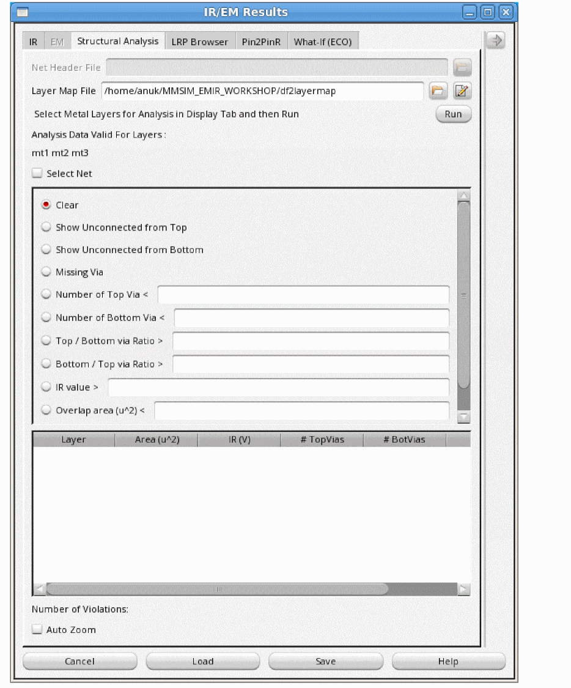

12
Structural Analysis
- Structural Analysis in Voltus-Fi-XL
- Checks Performed for Structural Analysis in Voltus-Fi-XL
- Top Via Missing Check in Voltus-Fi-XL
- Bottom Via Missing Check in Voltus-Fi-XL
- Missing Via Connections Check in Voltus-Fi-XL
- Via Coverage Ratio Check in Voltus-Fi-XL
- Skewed Via Ratio Check in Voltus-Fi-XL
- Running Structural Analysis in Voltus-Fi-XL
- Results of Structural Analysis in Voltus-Fi-XL
- IR/EM Results Form — Structural Analysis Tab
Structural Analysis in Voltus-Fi-XL
A typical electrical IR/EM analysis, which involves extraction of the power network, current calculation, and matrix solve, is able to identify devices that have a higher IR drop than the user-defined threshold.
Debugging the source of IR drop problems is a manual process involving the study of various voltage or current plots and patterns, and then narrowing down the weak links in the power grid. This is an effort-intensive activity.
Voltus-Fi-XL supports structural analysis, which is a shape-based geometrical analysis that is used to quickly identify power-grid weaknesses in designs and mark them on the Virtuoso layout for you to view and debug. Structural analysis cuts down on the sign-off analysis time. This analysis is available in the GUI mode.
You can perform structural analysis using the results of the IR drop analysis.
Related Topics
Checks Performed for Structural Analysis in Voltus-Fi-XL, Running Structural Analysis in Voltus-Fi-XL, Results of Structural Analysis in Voltus-Fi-XL, IR/EM Results Form — Structural Analysis Tab
Checks Performed for Structural Analysis in Voltus-Fi-XL
The checks performed in structural analysis in Voltus-Fi-XL work on the basic definition of connectivity—for every metal segment, there should be connectivity from the top metal layers to the bottom metal layers unless the metal segment belongs to either the top-most metal layer or to the bottom-most metal layer.
The via connectivity checks are performed on full-metal segments and not on the individual shapes that are part of the metal segments.
The following categories of checks can be performed for routing layers:
- For unconnected shapes in power net layout
- For overlapping layers
- For weakly connected shapes in power net layout
Related Topics
Structural Analysis in Voltus-Fi-XL, Running Structural Analysis in Voltus-Fi-XL, Results of Structural Analysis in Voltus-Fi-XL, IR/EM Results Form — Structural Analysis Tab
Top Via Missing Check in Voltus-Fi-XL
Top Via Missing is a check in Voltus-Fi-XL to perform structural analysis. This check highlights all metal segments that have no top via or contact shapes overlapping them on layer basis. In the following example, metal layer, M3, has via, V2, but does not have via, V3.
The highlighted shape in the example below has V2 but not V3.
Related Topics
Checks Performed for Structural Analysis in Voltus-Fi-XL, Bottom Via Missing Check in Voltus-Fi-XL, Missing Via Connections Check in Voltus-Fi-XL, Via Coverage Ratio Check in Voltus-Fi-XL, Skewed Via Ratio Check in Voltus-Fi-XL
Bottom Via Missing Check in Voltus-Fi-XL
Bottom Via Missing is a check in Voltus-Fi-XL to perform structural analysis. This check highlights all metal segments that have no bottom via or contact shapes overlapping them on layer basis. In the following example, metal layer, M3, has via, V3, but does not have via, V2.
The highlighted shapes in the example below have V3 but not V2.
Related Topics
Checks Performed for Structural Analysis in Voltus-Fi-XL, Top Via Missing Check in Voltus-Fi-XL, Missing Via Connections Check in Voltus-Fi-XL, Via Coverage Ratio Check in Voltus-Fi-XL, Skewed Via Ratio Check in Voltus-Fi-XL
Missing Via Connections Check in Voltus-Fi-XL
Missing Via Connections is a check in Voltus-Fi-XL to perform structural analysis. This check highlights overlapping wire segments that have no vias in the overlapping area. In the following example, the overlapping area between M4 and M3 has V3, but the overlapping area between M3 and M2 does not have V2.
The highlighted overlapping shape of the metal segments in the example below has missing via.
Related Topics
Checks Performed for Structural Analysis in Voltus-Fi-XL, Top Via Missing Check in Voltus-Fi-XL, Bottom Via Missing Check in Voltus-Fi-XL, Via Coverage Ratio Check in Voltus-Fi-XL, Skewed Via Ratio Check in Voltus-Fi-XL
Via Coverage Ratio Check in Voltus-Fi-XL
Via Coverage Ratio Check is a check in Voltus-Fi-XL to perform structural analysis. This check highlights segments that have less than user-specified via coverage ratio in the overlapping area. In the following example, the overlapping area between M2 and M3 has a via, but the via coverage ratio or the ratio of via area and overlapping area is less than the user-specified ratio.
The highlighted shape in the example below has a via coverage ratio less than that specified by the user.
Related Topics
Checks Performed for Structural Analysis in Voltus-Fi-XL, Top Via Missing Check in Voltus-Fi-XL, Bottom Via Missing Check in Voltus-Fi-XL, Missing Via Connections Check in Voltus-Fi-XL, Skewed Via Ratio Check in Voltus-Fi-XL
Skewed Via Ratio Check in Voltus-Fi-XL
Skewed Via Ratio Check is a check in Voltus-Fi-XL to perform structural analysis. This check highlights segments in which the ratio of top and bottom connecting vias is skewed. In the following example, the ratio of top/bottom via is 2:8, which is skewed.
The highlighted shape in the example below has a skewed top/bottom via ratio.
For this check, you can choose to:
- Highlight wire segments that have a top/bottom via ratio higher than the specified ratio.
- Highlight wire segments that have a bottom/top via ratio higher than the specified ratio.
Related Topics
Checks Performed for Structural Analysis in Voltus-Fi-XL, Top Via Missing Check in Voltus-Fi-XL, Bottom Via Missing Check in Voltus-Fi-XL, Missing Via Connections Check in Voltus-Fi-XL, Via Coverage Ratio Check in Voltus-Fi-XL
Running Structural Analysis in Voltus-Fi-XL
Voltus-Fi-XL performs structural analysis to quickly identify power-grid weaknesses in designs and mark them on the Virtuoso layout for you to view and debug.
To perform structural analysis, you first need to load the IR drop analysis results. Before you run structural analysis, ensure the following:
- In the Layers group box in the expanded IR/EM Results form, the layers for which you want to view the results of the structural analysis are selected.
- The list of selected layers includes metal layers because structural analysis is performed only for metal layers.
To run structural analysis, perform the following steps.
-
In the IR/EM Results form, select the Structural Analysis tab.
The following information is displayed.
 -
Select the Layer Map File and click Run.
The names of layers for which data is available will appear under the field titled, Analysis Data Valid For Layers. - Click Select Net to select a net on the Virtuoso layout.
-
To view the data, the options provided for different check types are enabled. Select the specific check you want to perform for the selected layers.
You can view the violations for the selected check type in the result browser. The following information is available for the selected metal layers for all checks except the missing via check: Layer, Area (u^2), IR(V), #TopVias, #BotVias, and Ratio. Double-click the column headings of the result browser to list the results in either an ascending or descending order. - Click Auto Zoom to zoom into the violations for the specified check.
- To change the layers for which you want to perform structural analysis, select or deselect the layers in the Layers group box in the expanded IR/EM Results form and click update.
Related Topics
Structural Analysis in Voltus-Fi-XL, Checks Performed for Structural Analysis in Voltus-Fi-XL,
Results of Structural Analysis in Voltus-Fi-XL
After you run structural analysis in Voltus-Fi-XL, the results are displayed in the Virtuoso layout depending on the specified check type. Provided below are examples for the following checks:
Show Unconnected from Top
The figure below shows an example of structural analysis results in the Virtuoso layout when the Show Unconnected from Top check is specified. Here, the metal segment (m2) does not have any top vias.
Show Unconnected from Bottom
The figure below shows an example of structural analysis results in the Virtuoso layout when the Show Unconnected from Bottom check is specified. Here, the metal segment (Metal_1) has only top vias. It does not have any bottom vias.
Bottom / Top Via Ratio
The figure below shows an example of structural analysis results in the Virtuoso layout when the Bottom / Top via Ratio > check is specified. In this example, the user-specified bottom/top via ratio is 8. The metal segment (Metal_1) has 3 top vias and 32 bottom vias. The bottom to top via ratio is 32:3, which is greater than the user-specified ratio of 8.
Missing Via Connections
In this example, the overlapping area of metal segments Metal_4 and Metal_3, which is highlighted in red, has a missing via, v3. The result browser shows the overlapping layer names and the overlapping area of the two segments. This is shown in the figure below.
Related Topics
Structural Analysis in Voltus-Fi-XL, Checks Performed for Structural Analysis in Voltus-Fi-XL, Running Structural Analysis in Voltus-Fi-XL, IR/EM Results Form — Structural Analysis Tab
IR/EM Results Form — Structural Analysis Tab
Return to top